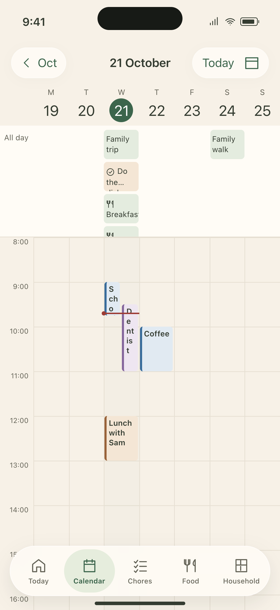
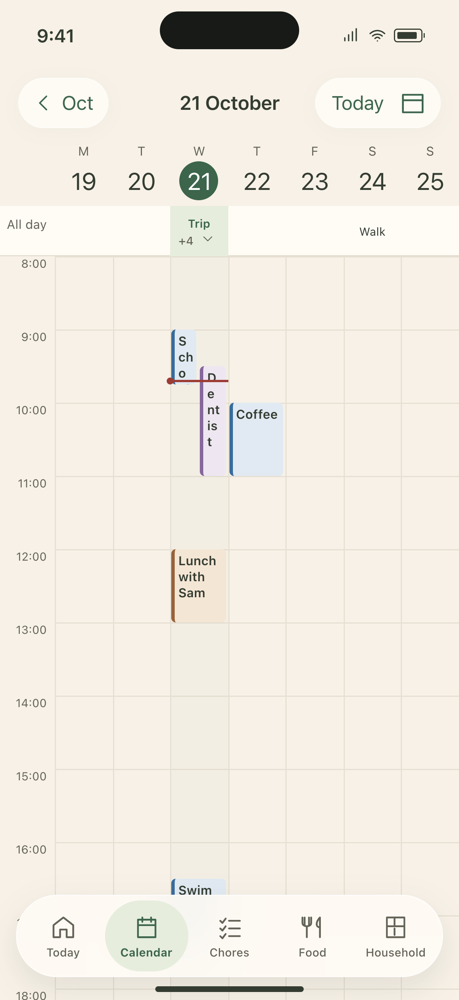
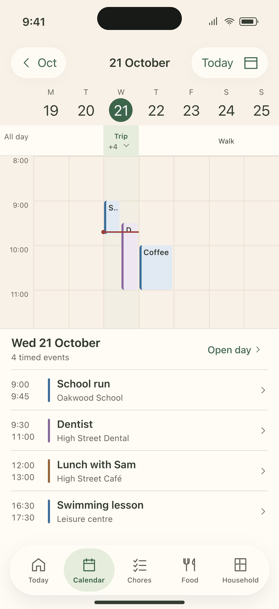
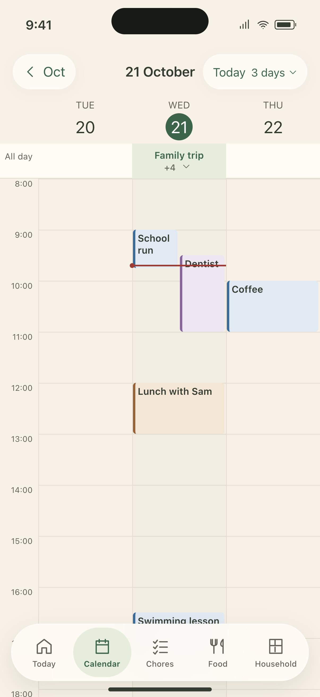

Existing layout
The current seven-column layout in the selected theme. The all-day area uses 160 points.

402 × 874 points · PNG at 3×
Open editable layoutStatic layout reference with the same sample events as the alternatives. Narrow event labels are part of the existing layout.
SelectedA · Compact seven days
Keep the full week. Collapse all-day items into one 44-point row.

402 × 874 points · PNG at 3×
Open editable layoutSelected. Gain 116 points for timed events. Tap Trip +4 to inspect all five items. Event names remain narrow.
B · Week with an agenda
Keep seven days above a readable list for the selected day.

402 × 874 points · PNG at 3×
Open editable layoutAlternative. Tap a date to select its column and agenda. Tap an event to open its detail. Open day gives the full timeline. Each pane scrolls independently.
C · Three-day zoom
Give each day more width. Keep the same time axis and overlap placement.

402 × 874 points · PNG at 3×
Open editable layoutChoose 3 days from the existing view menu. Swipe horizontally to move through dates. Tap a date to open Day. This option shows less of the week.